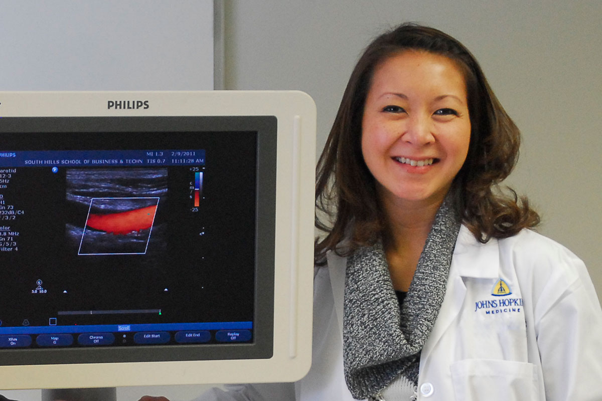
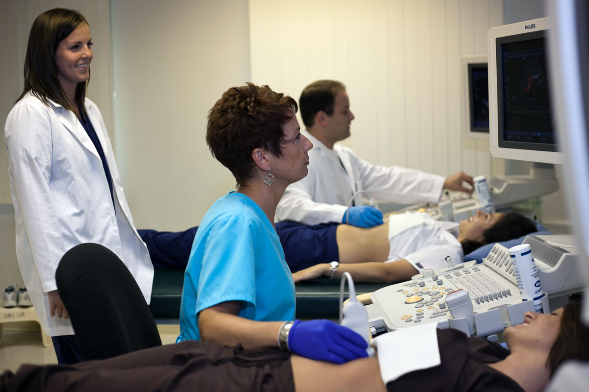
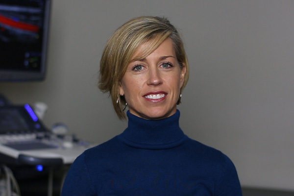
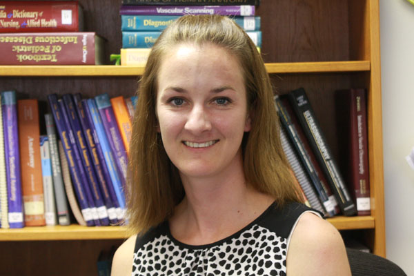

CAAHEP Accredited* Three-Year Associate in Specialized Technology (AST) Degree Program

South Hills’ CAAHEP-accredited Diagnostic Medical Sonography program will launch you in a career working closely with radiologists, cardiologists, and other medical professionals. You will learn to use state of the art, high-tech equipment utilizing ultrasound to assess human body. South Hills offers 3 pathways to enroll in sonography based on an individual’s background. Within each program, a student may choose between three specializations: General Sonography (OB/GYN, Abdominal), Cardiac Sonography (echocardiography/heart) and Vascular Sonography.
Our graduates hold titles including Cardiac Sonographer, Vascular Sonographer, General/Abdominal Sonographer, OB/Gyn Sonographer, Ultrasound Department Manager, Imaging Services Manager and Applications Specialist.
The Diagnostic Medical Sonography program (DMS) is a three-year program in which graduates earn an associate’s degree in specialized technology. This program is for those individuals that either do not have any post-secondary education or those that have minimal college credits earned.
In addition to our three-year program, the South Hills DMS program also offers:
This CAAHEP accredited two-year (6 terms) diploma program is designed for applicants who already have a previous Bachelor’s degree in a field other than medical imaging. It includes coursework in anatomy, physiology, medical terminology, patient care, and medical imaging sciences.
This CAAHEP accredited 1.5-year (5 terms) diploma program is designed for applicants who already have a previous 2-year or 4-year degree in a medical imaging specialty such as radiologic technology or nuclear medicine technology. It requires a strong background in anatomy, physiology, medical terminology, patient care, and medical imaging sciences.
Successful students in this program are dedicated and enthusiastic about learning, practice good time management skills, and have good communication skills.
South Hills students graduating with the Associate in Specialized Technology Degree in Diagnostic Medical Sonography are eligible to articulate into the Bachelor of Science program in Health Administration (BSHA) at Saint Joseph's College of Maine (SJCME). SJCME is a fully accredited liberal arts college offering Bachelor's and Master's degree programs in a variety of disciplines.
All courses required for the degree completion are available online. In addition, students whose personal goals include earning a graduate degree may choose to enter the fast track program. This program provides the opportunity to take master's level courses in place of some of the baccalaureate level courses. In doing so, the candidate will complete his/her Bachelor of Science degree, having already earned credits toward the SJCME Masters in Health Administration degree.

Tricia Turner, BS, RDMS, RVT
Program Director
Stephanie R. Wilson, BS, RDMS, RVT, FSVU
Assistant Program Director / Vascular Track Coordinator
Beth Lampe, BS, RDMS, RDCS (AE, PE)
Cardiac Track Coordinator

Elizabeth Ladrido, BS, RDMS, RVT
General Track Coordinator
Gregory Tressler, RT(R), RDMS
DMS Faculty Instructor
* The DMS, DPP, & DMP programs for General, Cardiac, and Vascular Sonography are accredited by the Commission on Accreditation for Allied Health Education Programs (CAAHEP) upon recommendation of the Joint Review Commission for Diagnostic Medical Sonography.